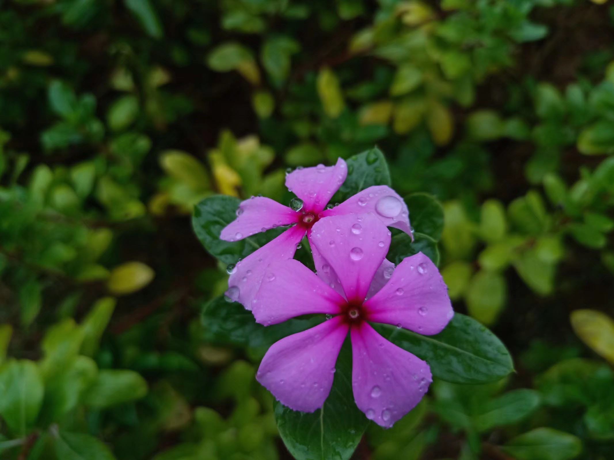
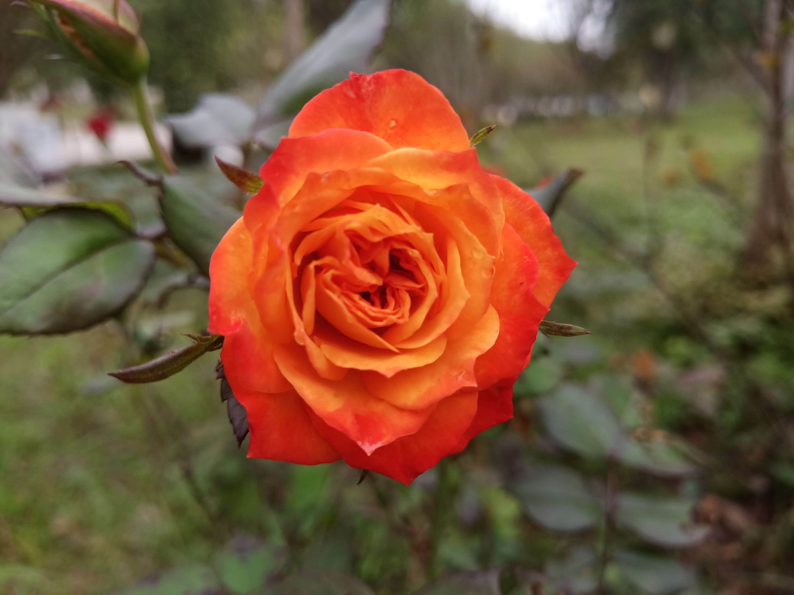
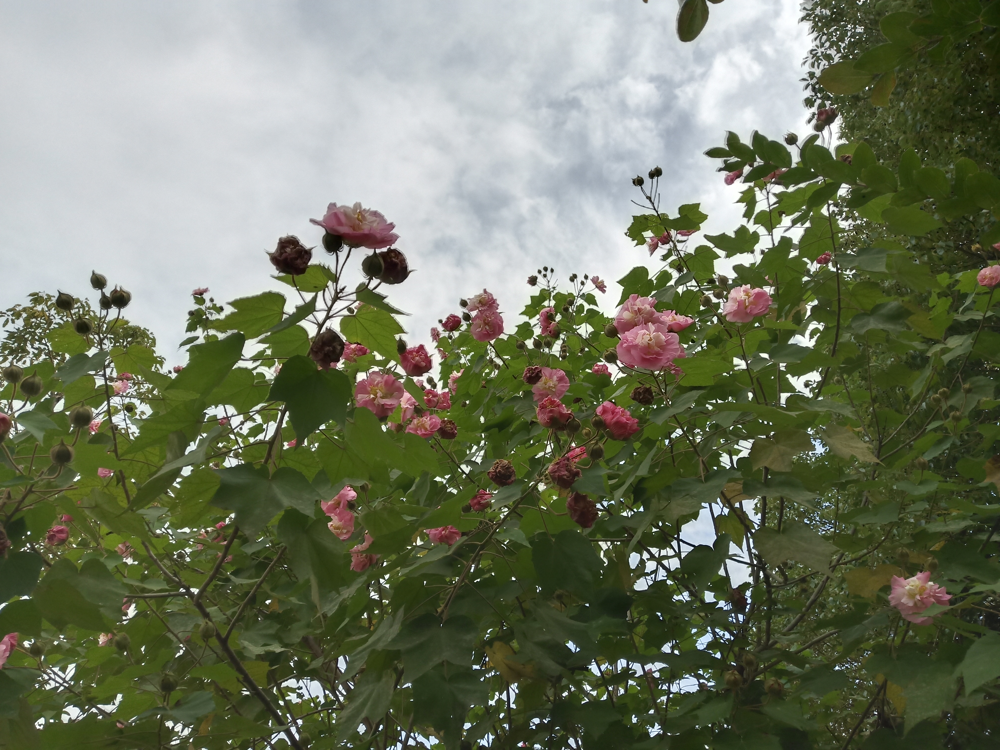
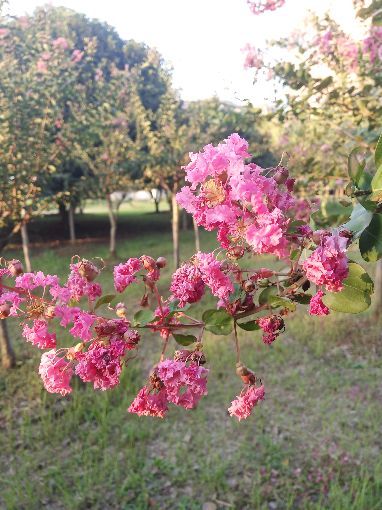
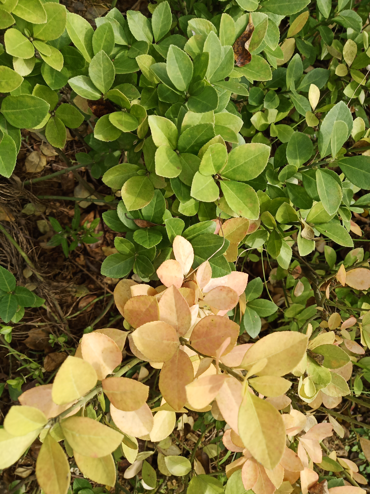

 |
长春花，学名：Catharanthus roseus（L.）G.Don，为夹竹桃科、春花属一种植物。别名日日春、日日草、日日新、三万花、四时春、时钟花、雁来红。花期、果期几乎全年。 观赏价值：长春花花朵繁多，花期长，花势繁茂，在温度适宜的情况下，从春到冬开花从不间断，所以有“日日春”之美名，而且品种繁多，花色俏丽，叶片四季青翠，尤其是北方，冬季可以在家里盆栽养护，给家庭增添一抹亮丽的春色，非常引人注目。 |
月季花（学名：Rosa chinensis Jacq.）：被称为花中皇后，又称“月月红”，是常绿、半常绿低矮灌木，四季开花﹐一般为红色﹐或粉色、偶有白色和黄色﹐可作为观赏植物，也可作为药用植物，亦称月季。有三个自然变种，现代月季花型多样，有单瓣和重瓣，还有高心卷边等优美花型；其色彩艳丽、丰富，不仅有红、粉、黄、白等单色，还有混色、银边等品种；多数品种有芳香。月季的品种繁多，世界上已有近万种，中国也有千种以上。 |
 |
 |
木芙蓉（Hibiscus mutabilis Linn.）又名芙蓉花、拒霜花、木莲、地芙蓉、华木。 观赏价值：与其他园林植物一样，木芙蓉的枝、干、芽、叶有其自然生长规律，形成了四季中的不同形态，主要表现春季梢头嫩绿，一派生机盎然的景象；夏季绿叶成荫，浓荫覆地，消除炎热带来清凉；秋季拒霜宜霜，花团锦簇，形色兼备；冬季褪去树叶，尽显扶疏枝干，寂静中孕育新的生机；一年四季，各有风姿和妙趣。 由于花大而色丽，中国自古以来多在庭园栽植，可孤植、丛植于墙边、路旁、厅前等处。特别宜于配植水滨，开花时波光花影，相映益妍，分外妖娆，所以《长物志》云：“芙蓉宜植池岸，临水为佳”。因此有“照水芙蓉”之称。此外，植于庭院、坡地、路边、林缘及建筑前，或栽作花篱，都很合适。在寒冷的北方也可盆栽观赏。 |
紫薇（拉丁文名：Lagerstroemia indica L.），别名：痒痒花、痒痒树、紫金花、紫兰花、蚊子花、西洋水杨梅、百日红、无皮树。花期6-9月，果期9-12月。 观赏价值：树姿优美、树干光du滑洁净，花色艳丽，开花时正植夏秋少花季节，花期极长，由6月可开至9月，故有“百日红”之称。适植于庭园内、建筑物前，或池畔、路边及草坪等处。可成片、成丛栽植，或作街景树、行道树。亦可制作盆景和桩景。 |
 |
 |
黄杨（学名：Buxus sinica (Rehder & E. H. Wilson) M. Cheng）：别称：黄杨木、瓜子黄杨、锦熟黄杨。灌木或小乔木，花期3月，果期5-6月。 观赏价值：黄杨盆景树姿优美，叶小如豆瓣，质厚而有光泽，四季常青，可终年观赏。杨派黄杨盆景，枝叶经剪扎加工，成“云片状”，平薄如削，再点缀山石，雅美如画。黄杨春季嫩叶初发，满树嫩绿，十分悦目。古人咏黄杨诗，飓尺黄杨树，婆要枝千重，叶深圃翡翠，据古踞虬龙。描绘了黄杨风姿，是家庭培养盆景的优良材料。 园林中常作绿篱、大型花坛镶边，修剪成球形或其他整形栽培，点缀山石或制作盆景。木材坚硬细密，是雕刻工艺的上等材料。 |
计算机11803 1804240605 何姗姗